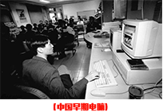
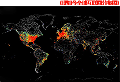
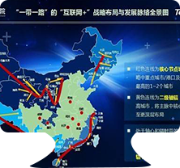
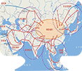

"Internet plus" is to further practice the thinking of the Internet into, it represents a kind of advanced productive forces, promote the economic continual evolution of the morphology of. To promote the vitality of socio-economic entities, for reform,inno -vation and development to provide a broad network of Ping taiwan. Popular, "Internet plus" is the "Internet plus various traditional industries", but this is not a simple combination, but the use of information and communication technology and the Internet platform, so that the Internet and traditional industries depth of integration, to create a new ecological development. In 1994, China began to access the Internet, and the pattern and industrial layout of China's economy changed dramatically. In 2015 to develop the "Internet plus" plan to promote mobile Internet, cloud computing, big data, networking and modern manufacturing industry combination, to promote e-commerce, the Internet industry and the healthy development of Internet banking, Internet guide enterprises to expand the international...


INTER + Dev
In more than 100 years, Chinese missed the first industrial revolution to the "age of steam" and the second industrial revolution "electric era" after World War II, the third industrial revolution is to catch the last train, but is still trying to catch up, only the age of the Internet, China has the ability to lead the world. In 20 years, the Internet industry is Chinese economic growth than the national legend, its GDP growth rateof 5 times, the Internet economy accounted for the proportion of GDP than in many developed countries, the Internet industry has driven the two or three industry, led the entire national economy overall capacity to. If the "Internet plus" action plan is successful, will give a strong impetus to the economic Chinese Everfount. In 2015, China's Internet economy accounted for all GDP4.4% (global 3.3%), according to McKinsey's analysis report, by 2025, China's...
INTER + Tec
The implementation of the development strategy of China's opening to the west, the Chinese to set up Silk Road Economic Belt cultural exchange center, tra -de center, transportation hub, must be innovative ideas, to create a full range of opening pattern. The next step, China further increased strong export-oriented economic development consci -ousness, changes in trade and economic relations between the main resources for the structure of, the Internet communication construction as the foundation, and gradually build open economic development zone, the formation of manufacturing industry, service industry, financial industry and the extensive integration of economic belt. For the sustainable development of economic and trade cooperation, provides lan -guage, translation, information assurance and professional training, supported by Internet supported intellectual. To promote interoperability...


 In 20 years, the Internet industry is Chinese economic growth than the national legend, its GDP growth rateof 5 times, the Internet economy accounted for the proportion of GDP than in many developed countries, the Internet industry has driven the two or three industry, led the entire national economy overall capacity to. If the "Internet plus" action plan is successful, will give a strong impetus to the economic Chinese Everfount. In 2015, China's Internet economy accounted for all GDP4.4% (global 3.3%), according to McKinsey's analysis report, by 2025, China's...
In 20 years, the Internet industry is Chinese economic growth than the national legend, its GDP growth rateof 5 times, the Internet economy accounted for the proportion of GDP than in many developed countries, the Internet industry has driven the two or three industry, led the entire national economy overall capacity to. If the "Internet plus" action plan is successful, will give a strong impetus to the economic Chinese Everfount. In 2015, China's Internet economy accounted for all GDP4.4% (global 3.3%), according to McKinsey's analysis report, by 2025, China's...